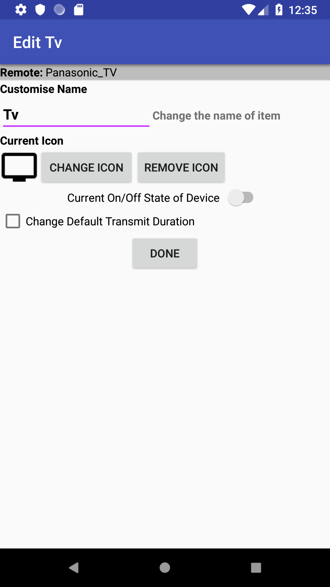

Edit Device
To edit a Device press the  button to the right of the required item on the Navigation Menu; this will open a screen similar to that shown in the figure.
button to the right of the required item on the Navigation Menu; this will open a screen similar to that shown in the figure.
Here you can:
- Change the name of the Device,
- Change or remove the icon that should be displayed in the Navigation Menu,
- Set the On/Off state of the Device.
- Change the Default Transmit Duration of Keys for this remote.
Notes:
- Changing the Device On/Off state does not control any devices; this command merely changes the internally stored state for the Device (see Device On/Off States)
- Changing the Default Transmit Duration will modify this setting for every key on the remote (even those you may have changed manually)
Once you have completed your modifications, press the Done button.
Pushing the Back button at any time will cancel the operation.
